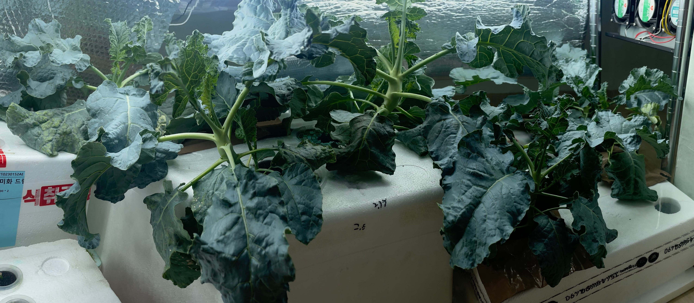

집 안의 작물 키우기
소개
나이: 성인
싫어하는 것: 컬리, 하루키, 유재석
계기
I saw a writing about an aeroponic potato in Nasa by accident. I was thinking of growing small plants, but I decided to raising hydroponic plants because the photo of professor Kratky (known by a deep culture method with his name) with practical articles.
Edible Plants

Edible plants are distinct from pot plants. I have seen of not only analysis articles but also raising manuals always for higher outputs.
There are established strict procedures for those plants for better yield and quality products. The market standard for a plant crop seems to be extremely high. Such processes for each plant has outstanding amount of labor, technique, and knowledege. This gives a recognizable objective for growing plants.
Also crop plants are also lovely, and has distinct smell.
Hydroponics advantages
Possible to control environmental parameters
Higher plant density thanks to the larger available root volume and air, strain segmentation
Larger yield, crop cycle manipulation
Less unfavorable insects and disease-free
Rooms for experiments
Hydroponics problems
Harmonizing a soil-like matrix: a missed crop cycle or fatal event happen easily
Have to buy something unusual in conventional gardening
More labor for some practices
To achieve better and faster growth, an artificial light source is must, and that is extremely energy inefficient in summer because high temperature is harmful to flowers